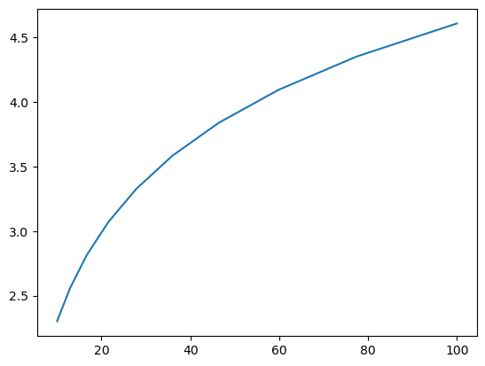

21. اشکالزدایی و مدیریت خطاها#
“اشکالزدایی دو برابر سختتر از نوشتن کد در مرحله اول است. بنابراین، اگر کد را تا حد ممکن هوشمندانه بنویسید، طبق تعریف، به اندازه کافی باهوش نیستید که آن را اشکالزدایی کنید.” – Brian Kernighan
21.1. مرور کلی#
آیا شما یکی از آن برنامهنویسهایی هستید که هنگام تلاش برای اشکالزدایی برنامههای خود، کد خود را پر از دستورات print میکنند؟
هی، همه ما قبلاً این کار را میکردیم.
(خوب، گاهی اوقات هنوز این کار را انجام میدهیم…)
اما هنگامی که شروع به نوشتن برنامههای بزرگتر میکنید، به یک سیستم بهتر نیاز خواهید داشت.
همچنین ممکن است بخواهید خطاهای احتمالی در کد خود را همانطور که رخ میدهند مدیریت کنید.
در این سخنرانی، درباره چگونگی اشکالزدایی برنامههای خود و بهبود مدیریت خطاها بحث خواهیم کرد.
21.2. اشکالزدایی#
ابزارهای اشکالزدایی برای Python در پلتفرمها، IDEها و ویرایشگرها متفاوت است.
به عنوان مثال، یک اشکالزدای بصری در JupyterLab موجود است.
در اینجا بر Jupyter Notebook تمرکز خواهیم کرد و شما را وا میگذاریم تا تنظیمات دیگر را کشف کنید.
به importهای زیر نیاز خواهیم داشت
import numpy as np
import matplotlib.pyplot as plt
21.2.1. دستور جادویی debug#
بیایید یک مثال ساده (و نسبتاً ساختگی) را در نظر بگیریم
def plot_log():
fig, ax = plt.subplots(2, 1)
x = np.linspace(1, 2, 10)
ax.plot(x, np.log(x))
plt.show()
plot_log() # Call the function, generate plot
---------------------------------------------------------------------------
AttributeError Traceback (most recent call last)
Cell In[2], line 7
4 ax.plot(x, np.log(x))
5 plt.show()
----> 7 plot_log() # Call the function, generate plot
Cell In[2], line 4, in plot_log()
2 fig, ax = plt.subplots(2, 1)
3 x = np.linspace(1, 2, 10)
----> 4 ax.plot(x, np.log(x))
5 plt.show()
AttributeError: 'numpy.ndarray' object has no attribute 'plot'

این کد قصد دارد تابع log را در بازه \([1, 2]\) رسم کند.
اما اینجا یک خطا وجود دارد: plt.subplots(2, 1) باید فقط plt.subplots() باشد.
(فراخوانی plt.subplots(2, 1) یک آرایه NumPy حاوی دو شیء محور برمیگرداند که برای داشتن دو نمودار فرعی در یک شکل مناسب است)
ردیابی نشان میدهد که خطا در فراخوانی متد ax.plot(x, np.log(x)) رخ میدهد.
خطا به این دلیل رخ میدهد که ما به اشتباه ax را یک آرایه NumPy کردهایم و یک آرایه NumPy هیچ متد plot ندارد.
اما بیایید وانمود کنیم که در این لحظه این موضوع را نمیفهمیم.
ممکن است مشکوک باشیم که مشکلی با ax وجود دارد اما وقتی سعی میکنیم این شیء را بررسی کنیم، استثنای زیر را دریافت میکنیم:
ax
---------------------------------------------------------------------------
NameError Traceback (most recent call last)
Cell In[3], line 1
----> 1 ax
NameError: name 'ax' is not defined
مشکل این است که ax در داخل plot_log() تعریف شده است و نام
به محض پایان یافتن آن تابع از دست میرود.
بیایید آن را به روشی متفاوت امتحان کنیم.
بلوک سلول اول را دوباره اجرا میکنیم و همان خطا تولید میشود
def plot_log():
fig, ax = plt.subplots(2, 1)
x = np.linspace(1, 2, 10)
ax.plot(x, np.log(x))
plt.show()
plot_log() # Call the function, generate plot
---------------------------------------------------------------------------
AttributeError Traceback (most recent call last)
Cell In[4], line 7
4 ax.plot(x, np.log(x))
5 plt.show()
----> 7 plot_log() # Call the function, generate plot
Cell In[4], line 4, in plot_log()
2 fig, ax = plt.subplots(2, 1)
3 x = np.linspace(1, 2, 10)
----> 4 ax.plot(x, np.log(x))
5 plt.show()
AttributeError: 'numpy.ndarray' object has no attribute 'plot'
اما این بار در بلوک سلول زیر تایپ میکنیم
%debug
شما باید به یک پرامپت جدید منتقل شوید که چیزی شبیه این به نظر میرسد
ipdb>
(ممکن است به جای آن pdb> ببینید)
اکنون میتوانیم مقدار متغیرهای خود را در این نقطه از برنامه بررسی کنیم، از طریق کد به جلو حرکت کنیم و غیره.
به عنوان مثال، در اینجا ما به سادگی نام ax را تایپ میکنیم تا ببینیم با
این شیء چه اتفاقی میافتد:
ipdb> ax
array([<matplotlib.axes.AxesSubplot object at 0x290f5d0>,
<matplotlib.axes.AxesSubplot object at 0x2930810>], dtype=object)
اکنون کاملاً واضح است که ax یک آرایه است که منبع
مشکل را روشن میکند.
برای اینکه بفهمید از داخل ipdb (یا pdb) چه کارهای دیگری میتوانید انجام دهید، از
راهنمای آنلاین استفاده کنید
ipdb> h
Documented commands (type help <topic>):
========================================
EOF bt cont enable jump pdef r tbreak w
a c continue exit l pdoc restart u whatis
alias cl d h list pinfo return unalias where
args clear debug help n pp run unt
b commands disable ignore next q s until
break condition down j p quit step up
Miscellaneous help topics:
==========================
exec pdb
Undocumented commands:
======================
retval rv
ipdb> h c
c(ont(inue))
Continue execution, only stop when a breakpoint is encountered.
21.2.2. تنظیم یک نقطه توقف#
رویکرد قبلی مفید است اما گاهی ناکافی است.
نسخه اصلاحشده زیر از تابع بالا را در نظر بگیرید
def plot_log():
fig, ax = plt.subplots()
x = np.logspace(1, 2, 10)
ax.plot(x, np.log(x))
plt.show()
plot_log()

در اینجا مشکل اصلی برطرف شده است، اما ما به طور تصادفی
np.logspace(1, 2, 10) را به جای np.linspace(1, 2, 10) نوشتهایم.
اکنون هیچ استثنایی وجود نخواهد داشت، اما نمودار درست به نظر نمیرسد.
برای بررسی، اگر بتوانیم متغیرهایی مانند x را در حین اجرای تابع بررسی کنیم مفید خواهد بود.
برای این منظور، با قرار دادن breakpoint() در داخل بلوک کد تابع یک “نقطه توقف” اضافه میکنیم
def plot_log():
breakpoint()
fig, ax = plt.subplots()
x = np.logspace(1, 2, 10)
ax.plot(x, np.log(x))
plt.show()
plot_log()
اکنون بیایید اسکریپت را اجرا کنیم و از طریق اشکالزدا بررسی کنیم
> <ipython-input-6-a188074383b7>(6)plot_log()
-> fig, ax = plt.subplots()
(Pdb) n
> <ipython-input-6-a188074383b7>(7)plot_log()
-> x = np.logspace(1, 2, 10)
(Pdb) n
> <ipython-input-6-a188074383b7>(8)plot_log()
-> ax.plot(x, np.log(x))
(Pdb) x
array([ 10. , 12.91549665, 16.68100537, 21.5443469 ,
27.82559402, 35.93813664, 46.41588834, 59.94842503,
77.42636827, 100. ])
ما دو بار از n برای حرکت به جلو از طریق کد (یک خط در هر زمان) استفاده کردیم.
سپس مقدار x را چاپ کردیم تا ببینیم با آن متغیر چه اتفاقی میافتد.
برای خروج از اشکالزدا، از q استفاده کنید.
21.2.3. دستورات جادویی مفید دیگر#
در این سخنرانی، از دستور جادویی IPython به نام %debug استفاده کردیم.
بسیاری از دستورات جادویی مفید دیگر وجود دارند:
%precision 4دقت چاپ برای اعداد اعشاری را به 4 رقم اعشار تنظیم میکند%whosفهرستی از متغیرها و مقادیر آنها را ارائه میدهد%quickrefفهرستی از دستورات جادویی را ارائه میدهد
فهرست کامل دستورات جادویی اینجا است.
21.3. مدیریت خطاها#
گاهی اوقات ممکن است هنگام نوشتن کد، باگها و خطاها را پیشبینی کنیم.
به عنوان مثال، واریانس نمونه بیطرفانه نمونه \(y_1, \ldots, y_n\) به صورت زیر تعریف میشود
این میتواند با استفاده از np.var در NumPy محاسبه شود.
اما اگر تابعی برای انجام چنین محاسبهای مینوشتید، ممکن است یک خطای تقسیم بر صفر را هنگامی که اندازه نمونه یک است، پیشبینی کنید.
یک اقدام ممکن این است که کاری نکنید — برنامه فقط سقوط میکند و یک پیام خطا نمایش میدهد.
اما گاهی اوقات ارزش دارد که کد خود را به گونهای بنویسید که خطاهای زمان اجرا را که فکر میکنید ممکن است رخ دهند، پیشبینی کرده و با آنها برخورد کند.
چرا؟
زیرا اطلاعات اشکالزدایی ارائه شده توسط مفسر اغلب کمتر مفید از آن چیزی است که میتواند توسط یک پیام خطای خوب نوشته شده ارائه شود.
زیرا خطاهایی که باعث توقف اجرا میشوند، جریانهای کاری را قطع میکنند.
زیرا اعتماد به کد شما را از طرف کاربران (اگر برای دیگران مینویسید) کاهش میدهد.
در این بخش، انواع مختلف خطاها در Python و تکنیکهایی برای مدیریت خطاهای احتمالی در برنامههای خود را بحث خواهیم کرد.
21.3.1. خطاها در Python#
ما AttributeError و NameError را در مثالهای قبلی خود دیدهایم.
در Python، دو نوع خطا وجود دارد – خطاهای نحوی و استثناها.
در اینجا مثالی از یک نوع خطای رایج آورده شده است
def f:
Cell In[6], line 1
def f:
^
SyntaxError: expected '('
از آنجایی که نحو غیرقانونی نمیتواند اجرا شود، یک خطای نحوی اجرای برنامه را خاتمه میدهد.
در اینجا نوع متفاوتی از خطا وجود دارد که به نحو مربوط نمیشود
1 / 0
---------------------------------------------------------------------------
ZeroDivisionError Traceback (most recent call last)
Cell In[7], line 1
----> 1 1 / 0
ZeroDivisionError: division by zero
در اینجا یکی دیگر است
x1 = y1
---------------------------------------------------------------------------
NameError Traceback (most recent call last)
Cell In[8], line 1
----> 1 x1 = y1
NameError: name 'y1' is not defined
و دیگری
'foo' + 6
---------------------------------------------------------------------------
TypeError Traceback (most recent call last)
Cell In[9], line 1
----> 1 'foo' + 6
TypeError: can only concatenate str (not "int") to str
و دیگری
X = []
x = X[0]
---------------------------------------------------------------------------
IndexError Traceback (most recent call last)
Cell In[10], line 2
1 X = []
----> 2 x = X[0]
IndexError: list index out of range
در هر مورد، مفسر ما را از نوع خطا آگاه میکند
NameError،TypeError،IndexError،ZeroDivisionErrorو غیره.
در Python، این خطاها استثناها نامیده میشوند.
21.3.2. ادعاها#
گاهی اوقات خطاها را میتوان با بررسی اینکه آیا برنامه شما همانطور که انتظار میرود اجرا میشود، از آنها جلوگیری کرد.
یک روش نسبتاً آسان برای مدیریت بررسیها با کلمه کلیدی assert است.
به عنوان مثال، برای یک لحظه وانمود کنید که تابع np.var وجود
ندارد و ما باید خودمان آن را بنویسیم
def var(y):
n = len(y)
assert n > 1, 'Sample size must be greater than one.'
return np.sum((y - y.mean())**2) / float(n-1)
اگر این را با یک آرایه با طول یک اجرا کنیم، برنامه خاتمه مییابد و پیام خطای ما را چاپ میکند
var([1])
---------------------------------------------------------------------------
AssertionError Traceback (most recent call last)
Cell In[12], line 1
----> 1 var([1])
Cell In[11], line 3, in var(y)
1 def var(y):
2 n = len(y)
----> 3 assert n > 1, 'Sample size must be greater than one.'
4 return np.sum((y - y.mean())**2) / float(n-1)
AssertionError: Sample size must be greater than one.
مزیت این است که میتوانیم
زودتر شکست بخوریم، به محض اینکه میدانیم مشکلی وجود دارد
اطلاعات خاصی در مورد اینکه چرا یک برنامه در حال شکست است ارائه دهیم
21.3.3. مدیریت خطاها در حین اجرا#
رویکرد استفاده شده در بالا کمی محدود است، زیرا همیشه منجر به خاتمه میشود.
گاهی اوقات میتوانیم خطاها را با ظرافت بیشتری، با رفتار با موارد خاص، مدیریت کنیم.
بیایید ببینیم چگونه این کار انجام میشود.
21.3.3.1. گرفتن استثناها#
میتوانیم استثناها را با استفاده از بلوکهای try – except بگیریم و با آنها برخورد کنیم.
در اینجا یک مثال ساده است
def f(x):
try:
return 1.0 / x
except ZeroDivisionError:
print('Error: division by zero. Returned None')
return None
وقتی f را فراخوانی میکنیم خروجی زیر را دریافت میکنیم
f(2)
0.5
f(0)
Error: division by zero. Returned None
f(0.0)
Error: division by zero. Returned None
خطا گرفته میشود و اجرای برنامه خاتمه نمییابد.
توجه کنید که انواع خطاهای دیگر گرفته نمیشوند.
اگر نگران هستیم که کاربر ممکن است یک رشته را پاس دهد، میتوانیم آن خطا را نیز بگیریم
def f(x):
try:
return 1.0 / x
except ZeroDivisionError:
print('Error: Division by zero. Returned None')
except TypeError:
print(f'Error: x cannot be of type {type(x)}. Returned None')
return None
در اینجا اتفاقی که میافتد
f(2)
0.5
f(0)
Error: Division by zero. Returned None
f('foo')
Error: x cannot be of type <class 'str'>. Returned None
اگر احساس تنبلی میکنیم میتوانیم این خطاها را با هم بگیریم
def f(x):
try:
return 1.0 / x
except:
print(f'Error. An issue has occurred with x = {x} of type: {type(x)}')
return None
در اینجا اتفاقی که میافتد
f(2)
0.5
f(0)
Error. An issue has occurred with x = 0 of type: <class 'int'>
f('foo')
Error. An issue has occurred with x = foo of type: <class 'str'>
به طور کلی بهتر است خاص باشید.
21.4. تمرینها#
Exercise 21.1
فرض کنید ما یک فایل متنی numbers.txt داریم که شامل خطوط زیر است
prices
3
8
7
21
با استفاده از try – except، برنامهای بنویسید که محتویات فایل را بخواند و اعداد را جمع کند، خطوط بدون عدد را نادیده بگیرید.
میتوانید از تابع open() که قبلاً یاد گرفتیم برای باز کردن numbers.txt استفاده کنید.
Solution to Exercise 21.1
بیایید ابتدا داده را ذخیره کنیم
%%file numbers.txt
prices
3
8
7
21
Writing numbers.txt
f = open('numbers.txt')
total = 0.0
for line in f:
try:
total += float(line)
except ValueError:
pass
f.close()
print(total)
39.0